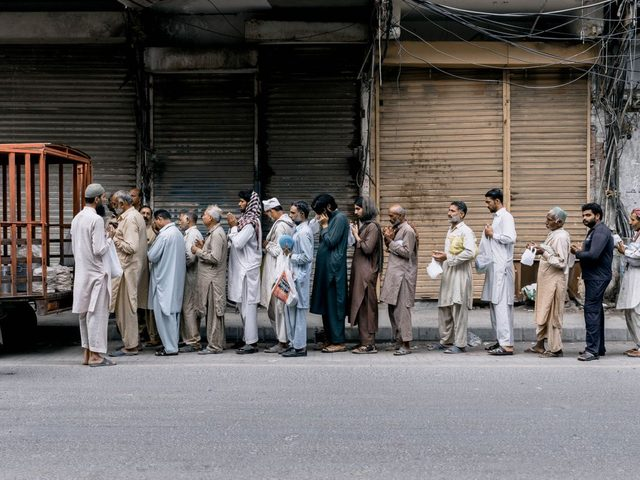
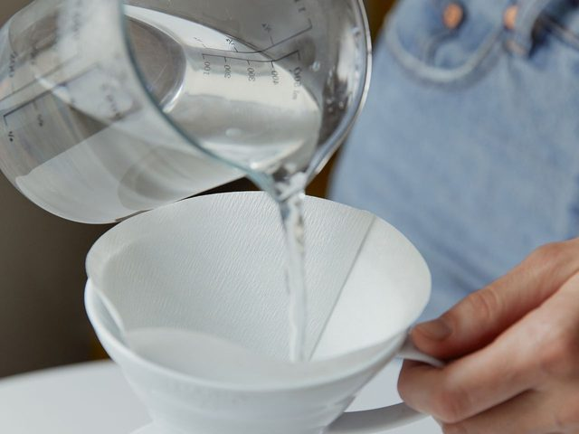
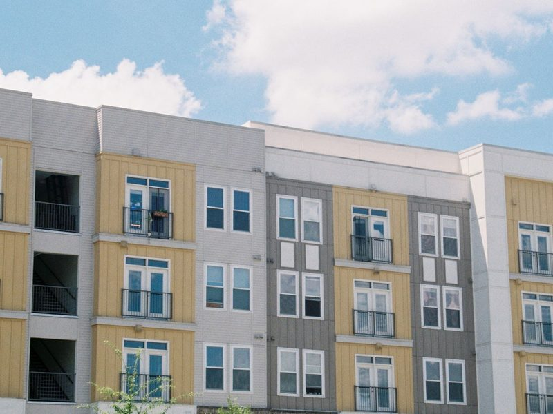
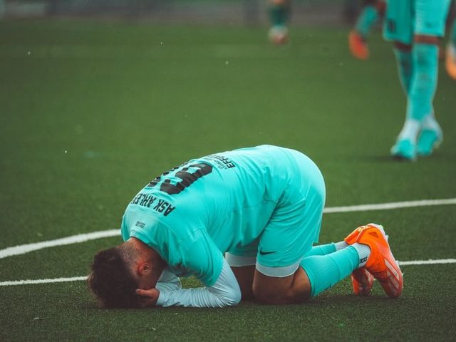
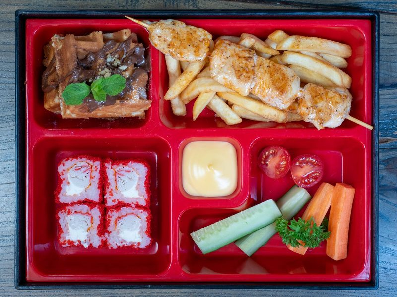

UNIT 28 · VOCABULARY
L 開頭（二）
L-II
37 個單字聽・唸・用
本單元單字一覽
WORD UP「L-II」的 37 個字（lick 到 lunch）。紅色＝要複習，藍色標籤＝WORD UP 標熟記、還要在這裡考對。
licklidlielifeliftlightlightninglikelikelylimitlinelinklionlipliquidlistlistenlittleliveloaflocallockLondonlonelylonglookloseloserlosslotloudlovelovelyloverlowluckylunch
每個字都有 🔊，先聽發音、跟著唸，再看例句。
單字 1–4

lick
舔v.
The dog licked my hand.
狗舔了我的手。
狗舔了我的手。

lid
蓋子n.
Put the lid on the pot.
把鍋蓋蓋上。
把鍋蓋蓋上。

lie
說謊；躺；謊話v./n.
Don't tell a lie.
不要說謊。
不要說謊。
life
生活；生命n.
Life is beautiful.
人生很美好。
人生很美好。
單字 5–8

lift
舉起；搭便車；電梯v./n.
Can you lift this heavy box?
你舉得起這個重箱子嗎？
你舉得起這個重箱子嗎？

light
光；燈；輕的；點燃n./adj./v.
Turn off the light.
關燈。
關燈。

lightning
閃電n.
I saw lightning in the sky.
我看到天空有閃電。
我看到天空有閃電。

like
喜歡；像v./prep.
You look like your mom.
你長得像你媽媽。
你長得像你媽媽。
單字 9–12
🌦️
likely
可能的adj.
It is likely to rain tomorrow.
明天可能會下雨。
明天可能會下雨。
🚧
limit
限制n./v.
There is a time limit for the test.
這個考試有時間限制。
這個考試有時間限制。

line
線；行；隊伍n.
Please stand in line.
請排隊。
請排隊。

link
連結；連接n./v.
Click on the link.
點那個連結。
點那個連結。
單字 13–16

lion
獅子n.
The lion is the king of animals.
獅子是萬獸之王。
獅子是萬獸之王。

lip
嘴唇n.
My lips are dry in winter.
冬天我的嘴唇很乾。
冬天我的嘴唇很乾。

liquid
液體；液體的n./adj.
Water is a liquid.
水是液體。
水是液體。
list
清單n.
Make a shopping list before you go.
出門前先列購物清單。
出門前先列購物清單。
單字 17–20

listen
聽v.
Listen to the teacher.
聽老師說。
聽老師說。

little
小的；少的adj./adv.
I have a little money.
我有一點錢。
我有一點錢。

live
居住；活的；現場的v./adj.
I live in Taipei.
我住在台北。
我住在台北。

loaf
一條（麵包）n.
Mom bought a loaf of bread.
媽媽買了一條吐司。
媽媽買了一條吐司。
單字 21–24
local
當地的adj.
Let's try some local food.
我們來吃點當地美食吧。
我們來吃點當地美食吧。
lock
鎖v./n.
Did you lock the door?
你鎖門了嗎？
你鎖門了嗎？

London
倫敦n.
London is the capital of the UK.
倫敦是英國的首都。
倫敦是英國的首都。
lonely
寂寞的adj.
He felt lonely after his friends moved away.
朋友們搬走後他覺得很寂寞。
朋友們搬走後他覺得很寂寞。
單字 25–28

long
長的；長久adj./adv.
How long have you lived here?
你住在這裡多久了？
你住在這裡多久了？

look
看；看起來v.
I'm looking for my glasses.
我在找我的眼鏡。
我在找我的眼鏡。

lose
遺失；輸v.
Our team lost the game.
我們隊輸了比賽。
我們隊輸了比賽。

loser
輸家n.
There is always a winner and a loser.
總會有贏家和輸家。
總會有贏家和輸家。
單字 29–32
📉
loss
損失；喪失n.
The fire caused a big loss.
那場火災造成很大的損失。
那場火災造成很大的損失。
🔢
lot
許多n.
I have a lot of friends.
我有很多朋友。
我有很多朋友。

loud
大聲的adj.
The music is too loud.
音樂太大聲了。
音樂太大聲了。

love
愛v./n.
I love playing basketball.
我超愛打籃球。
我超愛打籃球。
單字 33–36

lovely
可愛的；美好的adj.
What a lovely day!
多美好的一天！
多美好的一天！
💕
lover
愛好者；情人n.
He is a big book lover.
他很愛看書。
他很愛看書。

low
低的adj.
The price is very low.
價格很低。
價格很低。

lucky
幸運的adj.
You are so lucky!
你真幸運！
你真幸運！
單字 37–37

lunch
午餐n.
What did you have for lunch?
你午餐吃什麼？
你午餐吃什麼？
重點整理
| 說法 | 中文 | 例子 |
|---|---|---|
| look at / look for / look after | 看 ／ 找 ／ 照顧 | look for my key |
| alone / lonely | 獨自 ／ 寂寞的 | live alone but not lonely |
| a little / little | 一點 ／ 幾乎沒有（不可數） | a little milk |
| lose / loser / loss | 輸、遺失 ／ 輸家 ／ 損失 | lose the game |
| a lot of / lots of | 許多 | a lot of books |
| stand in line | 排隊 | stand in line for tickets |
| be likely to V | 可能會… | likely to snow |
life → lives、loaf → loaves：f 結尾的名詞複數常變成 -ves。
快問快答：中文 → 英文
1舔lick
2說謊；躺；謊話lie
3舉起；搭便車；電梯lift
4閃電lightning
5可能的likely
6線；行；隊伍line
7獅子lion
8液體；液體的liquid
快問快答：英文 → 中文
1listen聽
2live居住；活的；現場的
3local當地的
4London倫敦
5long長的；長久
6lose遺失；輸
7loss損失；喪失
8loud大聲的
學完了！接下來
複習方法
review
- 回到「📗 單字卡」，按「遮中文」自己考自己
- 再按「遮英文」，看中文說出英文
- 每個例句跟著 🔊 唸一次
準備好了
- 按右上角「📝 前往測驗」
- 測驗錯的題目要訂正到全對
- 訂正完成補送 1 點